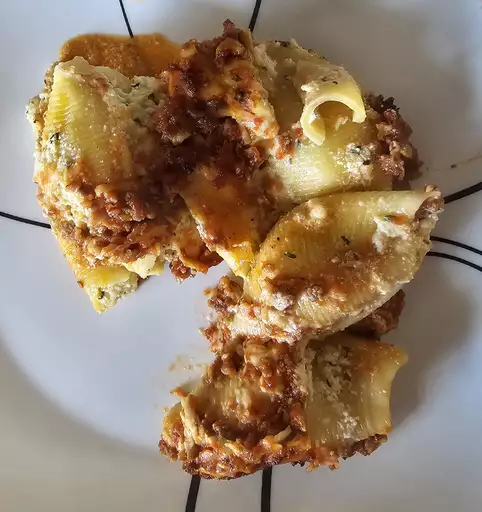

Stuffed Shells

Description
Jumbo Shells stuffed with Ricotta filling and baked with beef ragu
You Will Need
Ingredients
- Jumbo Shells - 12oz
- Ground Beef - 16oz
- Marinara - 16oz
- Ricotta Cheese - 15oz
- Parmesan - 4oz
- 1 Large Egg
- Mozarella - 8oz
- Parsley - 1/4 Tsp
- Garlic Powder - 1 Tsp
Steps
- Preheat your oven tp 350° F
- Bring salted water to a boil. Following your box's directions, prepare your jumbo shells. After they are drained,
ensure you rinse them with cold water to stop the cooking process.
- Brown the ground beef, draining any excess fat. Combine it with your marinara (jarred or homemade).
- Prepare the shell filling by combining the ricotta, a few ounces of mozarella, the parmesan, egg, parsley and garlic powder. You may add black powder to taste.
- Line the bottom of your baking dish with a small amount of the sauce that you've created.
- Using a spoon and your fingers, fill each shell (careful not to overfill) and place them, opening side up,
- Top the shells with your mozarella, and cover the entire baking dish with aluminum foil.
- Bake for 40 minutes. Remove the foil.
- Bake for an additional 5-10 mminutes, until the cheese is brown and bubbly.
- Allow the shells to rest before eating, so that the cheese filling can set. Serve with basil garnish.